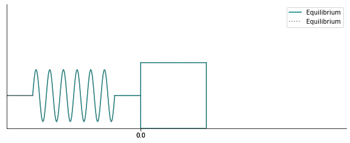

Suppose we have a spring that can stretch or compress an object attached to the end. Let \(M\) be the mass of the object, measured in kilograms. Hooke's law states that the force exerted by the spring on this object is proportional to the displacement of the object from equilibrium. Equilibrium here is when the spring is "at rest", neither stretched nor compressed.
The graph below shows the displacement from equilibrium (marked on the horizontal axis) of a mass attached to a horizontal spring. You can move the slider to view the results of compressing and/or stretching the spring.
Observe that at equilibrium, the displacement is 0. When the spring is compressed (i.e., the mass is to the left of the equilibrium position), displacement is negative. When the spring is stretched (i.e., the mass is to the right of the equilibrium position), the displacement is positive.
Using the method below, once could use a spring to simultaneously determine the mass of an object in outer space and the spring constant. In outer space, it is important for astronauts to know their mass, an indicator of health. While not exactly the method outlined below, astronauts do use a machine that is based on springs to measure their mass in space. See here for details.
Let's consider the forces acting on the mass.
Newton's second law of motion states that the total force acting on an object is equal to the mass of the object times its acceleration:
\[F_{total} = 𝑚⋅𝑎\]Hooke's law states that the force exerted by the spring is proportional to the displacement of the object from equilibrium. If we denote displacement from equilibrium by \(x\),
\[F_{𝑠𝑝𝑟𝑖𝑛𝑔}=𝑘⋅𝑥,\]where \(k\) is a constant. Each individual spring has a single value of \(k\) that depends on multiple factors, including the length of the spring, the number of coils, and the material that the spring is made out of.
Let's denote any additional forces on the mass by \(F_{𝑒𝑥𝑡𝑒𝑟𝑛𝑎𝑙}\). Thus, \[𝐹_{𝑡𝑜𝑡𝑎𝑙}=𝐹_{𝑒𝑥𝑡𝑒𝑟𝑛𝑎𝑙}+𝐹_{𝑠𝑝𝑟𝑖𝑛𝑔}=𝐹_{𝑒𝑥𝑡𝑒𝑟𝑛𝑎𝑙}+𝑘⋅𝑥=𝑀⋅𝑎\]
Subtracting \(𝐹_{𝑠𝑝𝑟𝑖𝑛𝑔}\) from both sides, we have
\[𝑀⋅𝑎−𝑘⋅𝑥=𝐹_{𝑒𝑥𝑡𝑒𝑟𝑛𝑎𝑙}\]This equation must hold for all times that the mass is attached to the spring. 𝑀 and 𝑘 are constants. Constants in a a system are referred to as parameters of this spring-mass system. \(𝐹_{𝑒𝑥𝑡𝑒𝑟𝑛𝑎𝑙}\), \(𝑎\), and \(𝑥\) are actually functions of time, which may or may not be constant. Recall also that acceleration is the second derivative of displacement. So, the equation of this spring-mass system is \[𝑀⋅𝑥''(𝑡)+𝑘⋅𝑥(𝑡)=𝐹_{𝑒𝑥𝑡𝑒𝑟𝑛𝑎𝑙}(𝑡)\tag{1}\]
Directions: Complete each question and write down your answer on a piece of paper to hand in. Answers to some questions will be provided after you click the "Check Answer" button. You should write down your answers before checking them.
How could one determine the values of the parameters 𝑀 and 𝑘 for a given spring? If \(𝐹_{𝑒𝑥𝑡𝑒𝑟𝑛𝑎𝑙}(𝑡)\) is known and \(𝑥(𝑡)\) can be measured, we can then solve for \(𝑀\) and \(𝑘\).
1. We have one equation and two unknowns (\(𝑀\) and \(𝑘\)). How many equations do we need to solve for \(𝑀\) and \(𝑘\)?